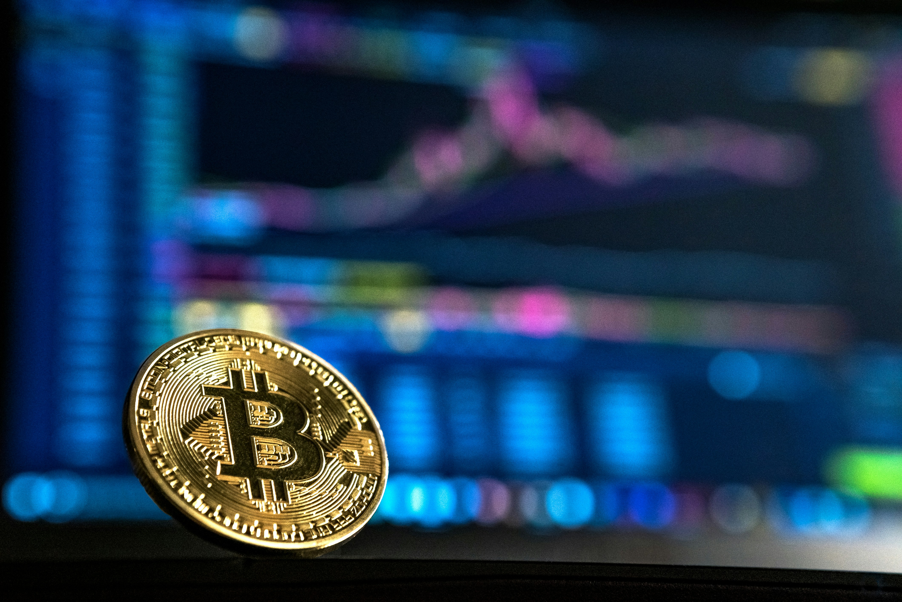

Bitcoin이란 무엇인가?
(abbreviation: BTC[a]; sign: ₿) is the first decentralized cryptocurrency. Nodes in the peer-to-peer bitcoin network verify transactions through cryptography and record them in a public distributed ledger, called a blockchain, without central oversight. Consensus between nodes is achieved using a computationally intensive process based on proof of work, called mining, that requires increasing quantities of electricity and guarantees the security of the bitcoin blockchain.
Based on a free market ideology, bitcoin was invented in 2008 by Satoshi Nakamoto, an unknown person.[6]  Use of bitcoin as a currency began in 2009,[7] with the release of its open-source implementation.[8]: ch. 1 In 2021,
El Salvador adopted it as legal tender.[4] Bitcoin is currently used more as a store of value and less as a medium of exchange or unit of account. It is mostly seen as an investment and has been described by many scholars as an economic bubble.[9] As bitcoin is pseudonymous, its use by criminals has attracted the attention of regulators,
leading to its ban by several countries as of 2021.[10]